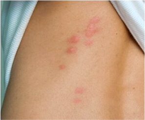
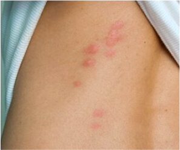

Santé
Un chat errant a ramené des vers à la maison en transportant ces bestioles sur son corps. Que doivent faire les propriétaires et leurs proches?
Bonjour à tous! C'est encore moi, Philippe Lalonde. Je recommande cette entrée à tous ceux qui ont des animaux de compagnie.
Il y a six mois, en rentrant du travail, j'ai vu cette mignonne créature duveteuse.

C'était évidemment un chat errant: mat, avec la queue coupée. Je suppose qu'il l'a gelée ou qu'il l'a perdue en se battant avec des chiens.
Ma femme et moi avons décidé de le ramener à la maison. Nous l'avons nourri, lavé et brossé, nous l'avons appelé Alfred et nous avons eu un véritable coup de foudre en le voyant. En une semaine seulement, il est devenu un chat bien nourri et satisfait, rarement vilain, il attrapait des souris factices et adorait se coucher sur nos genoux...


Mais nous n'avons pas fait de mal à Alfred. Pour être honnête, nous ne savions même pas que nous aurions dû le faire. Nous pensions qu'il suffisait de le laver avec du shampoing. Nous regrettons tellement notre décision!
 
Ma femme a été la première à tomber malade. Elle a soudain remarqué d'étranges plaques rouges sur son corps: d'abord sur sa main, puis sur son dos et son ventre. Elle n'avait jamais souffert d'allergies auparavant. Mais on ne sait jamais et la femme a cessé de manger des fruits et des sucreries. Et s'ils en sont la cause ?
Elle a alors fait un régime et les plaques n'ont pas disparu. Au contraire, elles ont grossi, et elle développait des boutons de fièvre sur ses lèvres, qui ne guérissaient pas. De plus, ma femme réagissait de façon étrange à la nourriture. Elle avait toujours faim! Sérieusement, je n'avais jamais vu une fille de 50 kilos qui pouvait manger du jarret de porc en une seule fois et en redemander 10 minutes plus tard...
J'étais condamné à vivre la même chose très bientôt. La seule différence est que je n'avais que 5 plaques, et pourtant elles me démangeaient terriblement! Je me suis gratté les bras jusqu'à ce qu'ils saignent et je n'ai rien pu faire. J'avais faim, mais pas autant que ma femme. Au lieu de cela, j'ai souffert de constipation: Je n'ai pas pu déféquer pendant 3-4 jours.

Nous étions prêts à aller voir un médecin pour comprendre au moins un peu ce qui nous arrivait. Mais le diagnostic ne s'est pas fait attendre et nous n'avons pas eu à dépenser une fortune en tests de laboratoire!
Un jour, Alfred n'a pas utilisé sa litière et a fait ses besoins sur le sol. J'ai commencé à la nettoyer et ce que j'y ai vu a hérissé mes cheveux. Il y avait une profusion d'énormes helminthes! Attention: cette photo peut heurter les plus sensibles, mais je dois la poster ici pour rendre mon message plus convaincant.
«C'est donc pour ça qu'il y a tant d'agitation!» - Je me suis dit: «Il se trouve que ma femme et moi avons attrapé des helminthes de notre chat!»
Je ne savais pas quoi faire, alors j'ai demandé conseil à notre voisin. Elle a deux chats et un chien, elle doit avoir de l'expérience.
Ma voisine m'a écouté, calmement, et m'a dit ensuite que sa famille n'avait pas de problèmes avec les helminthes. Mais quand les animaux de compagnie étaient petits, ils ramenaient souvent des helminthes à la maison et à de très nombreuses reprises, elle a donc été infectée. Mais on lui a alors conseillé d'utiliser un algorithme quelconque. Laissez-moi vous en faire part.
- 1 Utilisez des produits vétérinaires pour vermifuger votre chat tous les 3 mois - même si vos animaux ne sont pas des animaux de plein air et ne marchent jamais dans la rue. Vous pouvez rapporter des œufs d'helminthes sur vos chaussures et vous infecter ainsi que vos animaux domestiques.
- 2 Achetez des gélules à base de plantes et buvez-les 2 fois par an pendant 10 jours - même si vous n'avez pas d'helminthes. Juste à titre préventif. Quant aux produits anthelminthiques vendus en pharmacie, il vaut mieux éviter de les utiliser. Ils ont le même effet qu'une bouteille de whisky bue en une seule gorgée: le foie de peu de gens est en mesure de supporter ces effets!
- 3 Si vous constatez la preuve d'une infection (vers dans les excréments de votre animal), recommandez à tous ceux que vous avez approchés récemment: vos amis, vos parents, etc.
À notre retour, nous avons commandé un produit anthelminthique pour Alfred et pour nous-mêmes. Au fait, veuillez noter que ne peut être acheté que sur le site officiel du fabricant. Mais c'est super - c'est une garantie à 100% du produit d'origine.
Le produit a été livré rapidement, sans retard. Nous avons immédiatement administré un vermifuge au chat: nous lui avons donné une pilule et le lendemain matin, ses excréments étaient dépourvus de vers. Nous lui donnerons une autre pilule 3 mois plus tard.

Mais cela nous a pris plus de temps à ma femme et à moi. Je me suis débarrassé des plaques sur mes mains en seulement 4 jours et quand j'ai déféqué 5 jours plus tard, j'étais sur le point de m'évanouir tellement j'étais dégoûté.
Un énorme rouleau d'helminthes est sorti tout droit de mon corps!
Aussi étrange que cela puisse paraître, après cela, je me suis senti mieux. Les helminthes ont continué à quitter progressivement mon corps pendant les 2 jours suivants. Et puis les démangeaisons et les périodes de faim ont disparu.
Ma femme s'en est remise aussi: les plaies et les peaux mortes ont disparu. Son appétit s'est amélioré et elle ne me choque plus avec de grosses portions.
Nous ne craignons plus les saloperies qu'Alfred peut ramener avec lui de la rue. Avec Nous sommes si bien protégés que nous sommes heureux de laisser le chat dormir dans notre lit et même de l'embrasser. D'ailleurs, il est plus chaud qu'une couverture de laine!
N'attendez pas que des grappes de vers commencent à sortir de votre corps. N'enlevez pas seulement les vers de vos animaux domestiques, mais aussi ceux de votre propre corps. J'ai pris soin de vous laisser le faire dès maintenant, en lisant ce texte. En ma qualité de blogueur, je suis parvenu à un accord avec un fabricant concernant une réduction de 50 % pour mes abonnés. Ceux qui ont des animaux de compagnie apprécieront cela. S'occuper d'un animal de compagnie est une tâche ardue. Ne manquez pas votre chance de faire des économies tout en protégeant votre famille contre de vilains parasites.
Gaël il y a 6 jours
Pourriez-vous afficher sa formule? Ce serait très bien pour les personnes allergiques.
Frederic il y a 6 jours
Absinthe, curcuma, Gotu Kola, Emblica officinalis, céleri rave. C'est tout à fait inoffensif.
Jean il y a 4 jours
Je fais la même chose depuis longtemps. Mon chat est un chat d'extérieur, il ne rentre à la maison que pour manger et dormir. D'ailleurs, il dort aussi avec nous. Nous n'avons pas peur des helminthes. Nous avons pris 1 à 2 fois par an pendant 3 ans et nous n'avons pas été infectés.
Alexis il y a 3 jours
Justement! Quand j'ai adopté un chien, j'ai eu des boutons. Les crèmes, les pommades et l'abandon des sucreries sont depuis longtemps inefficaces. Merci à l'auteur pour ses conseils. Je vais les appliquer.
André il y a 3 jours
En ma qualité de biochimiste, je dois dire que c'est un produit très efficace. Les extraits d'herbes contenus dans sont sans danger pour les personnes et les animaux domestiques, mais toxiques pour les parasites. D'ailleurs, ils sont toxiques pour toutes sortes de parasites, pas seulement pour les oxyures ou les ascarides. tue les lamblias dans le foie, les toxocaras et les nageoires caudales, alors que les produits anthelminthiques ordinaires étaient jusqu'alors impuissants. est également utile lorsque plusieurs espèces de parasites vivent dans le corps humain.
Alice il y a 2 jours
J'avais tout le temps des boutons sur le front et des poussées d'herpès labial à cause des helminthes. J'ai pris et tous les problèmes ont disparu en une semaine.
Anne il y a 2 jours
Je n'ai pas d'animaux, mais mon enfant a attrapé cette vilaine maladie dans un bac à sable. Les symptômes étaient les mêmes. Nous avons utilisé des capsules et maintenant c'est bon. Merci à ma mère pour ses conseils!
Claire il y a 1 jour
Rien de nouveau:) J'ai pris ces capsules pendant 4 ans à titre préventif.
Nicholas il y a 10 heures
Auteur, votre chat est incroyable! Je veux un chat comme celui-là!
Valéry il y a 5 heures
J'ai lu qu'une personne sur deux dans notre pays a des helminthes. Mais beaucoup de gens n'en ont aucune idée.
André il y a 2 heures
Vous avez raison. Dans 70 % des cas, la maladie est latente et ne peut être diagnostiquée qu'après avoir subi des tests. C'est pourquoi la protection contre les parasites est indispensable, tout comme le nettoyage des dents ou le lavage du visage.